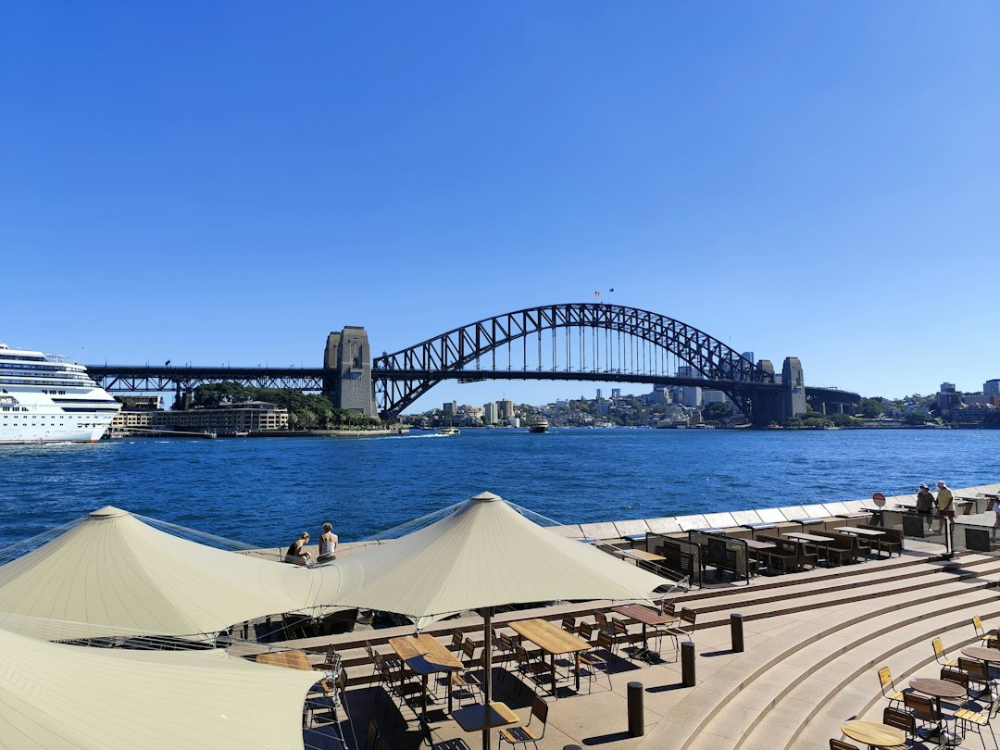

For diners comparing restaurants sydney options, the useful starting point is matching the occasion, cuisine, location and booking need before opening individual venue profiles.
Restaurants Sydney Explained
Best Sydney Restaurants is presented as a directory for finding standout restaurants across Sydney, with search, category pages, location browsing, reviews and venue profiles in one place. Use it as a shortlisting tool. The source page directs readers to venue profiles, and some listings point to the venue's own information for current menus, trading details and booking availability.
Start with the reason for the meal. A casual family booking, fine dining reservation, group dinner, private dining enquiry or vegan friendly meal will need different checks. The listed category paths include Casual and Family, Chinese, Fine Dining, Indian, Italian, Japanese, Mediterranean, Modern Australian, Restaurants, Seafood, Steak and Grill, Thai, and Vegetarian and Vegan.
Profile depth varies. Esteban, Rockpool Bar and Grill Sydney, and Mecca Bah Sydney are described as verified venue listings where the venue's own site provides menu, reservation, private dining or function information. El Corte Argentinian Steakhouse Darling Harbour is described as serving grilled meats and classic South American dishes. The Grand Palace is described as offering authentic Indian cuisine in Sydney.
When Category Search Helps
Category browsing works best when cuisine or service style matters more than a single suburb. A diner looking for seafood, Thai food, fine dining, steak, Indian food or vegetarian and vegan options can begin with the relevant path, then check location, reviews, photos and service details. The page says readers can compare services and pricing, but it does not give one universal price guide, so menu pricing still needs confirmation with the venue.
Use the category to avoid comparing unlike bookings. A weekday family meal and a private dining enquiry may sit in the same suburb, but the useful evidence is different. For a function, look for profile wording about reservations, private dining or functions. For a simpler meal, the cuisine description, suburb, review display and contact path may be enough to decide whether to enquire.
- Occasion: casual meal, family meal, date night, group dinner or function.
- Cuisine: choose the listed category that matches the food style first.
- Booking need: check whether the profile mentions reservations, menus or private dining.
- Contact step: use the listed call, email or quote pathway where available.
Using Location With Purpose
The directory includes suburb based browsing, and the useful pattern is category plus place. The source page shows examples such as restaurants in Parramatta, Thai restaurants in Newtown, Thai restaurants in Woolloomooloo, Mediterranean restaurants in Surry Hills, Italian restaurants in Barangaroo, fine dining in Potts Point, casual and family venues in The Rocks, seafood in Haymarket, and seafood in Barangaroo.
Those examples help when the dining area is part of the decision. A visitor may want a venue near accommodation or plans elsewhere in the city. A local may want to see whether a familiar suburb has enough choice before widening the search. The practical check is whether the area suits the group, the cuisine, the intended booking and the journey after the meal.
A related guide to Sydney restaurant comparisons gives another published view of the same dining theme while keeping the decision focused on category, place and profile evidence.
Reading Venue Cards Carefully
Venue cards combine several signals: name, area, category, rating display, review count and a short description. The source page shows Esteban in Sydney with a 4.7 display from 1877 reviews, El Corte Argentinian Steakhouse Darling Harbour with a 4.6 display from 1477 reviews, The Grand Palace with a 4.4 display from 1771 reviews, Rockpool Bar and Grill Sydney with a 4.4 display from 3308 reviews, and Mecca Bah Sydney with a 4.4 display from 2353 reviews.
Read beyond the score. Check whether the card identifies a cuisine clearly, whether the listing is marked verified, and whether the wording points to menus, reservations, private dining or functions. A high review count may help with orientation, but it does not decide whether a venue suits a quiet dinner, a large group, a family booking or a dietary preference.
Before booking, confirm current details through the venue profile or the venue's own published information. Menus, trading details and availability can change, and the source page itself tells readers to check official venue information for those items on verified listings.
Who This Applies To
This guide suits diners who want a structured way to compare Sydney venues before contacting them. It is most useful when the choice involves cuisine type, suburb, occasion and booking detail rather than only a name search.
It also applies to venue owners checking how the directory presents business listings. The source page says businesses can claim a free listing or upgrade to Pro for priority placement, photos and lead tracking. That gives the page two clear uses: diners can shortlist places, and operators can review how a listing may appear in search, category and location views.
For diners, the desired result is a small group of suitable venues where the cuisine, suburb, booking needs and available profile information line up well enough to make contact worthwhile.
- Choose the occasion. Decide whether the meal is casual, family focused, fine dining, group based or function related before comparing venues.
- Filter by category. Use the listed category paths to separate cuisine and service style before reading individual venue cards.
- Check suburb fit. Use location examples to see whether the area works for the group, timing and travel plan.
- Read the profile. Look for verification notes, menu references, reservation information, photos and contact options.
- Confirm directly. Before booking, confirm current menus, trading details and availability with the venue's own information.
| Starting point | Best fit | What to check next |
|---|---|---|
| Cuisine category | You know the food style first | Reviews, suburb, profile detail and booking information |
| Location page | The suburb or dining area matters first | Category fit, venue description and contact path |
| Featured profile | A named venue already looks suitable | Menus, reservations, private dining or function details |
| Business listing path | A venue owner wants visibility | Free claim option or Pro upgrade details |
This guide covers how to compare Sydney dining listings, categories, suburbs, profile signals and contact steps using the supplied directory information.